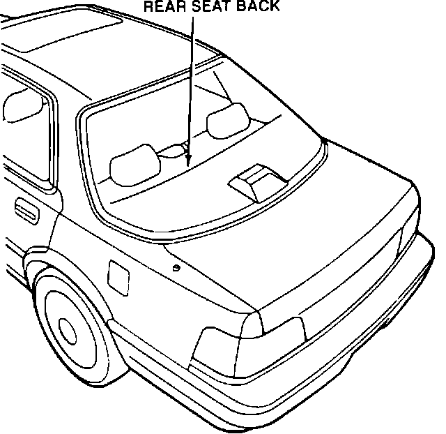
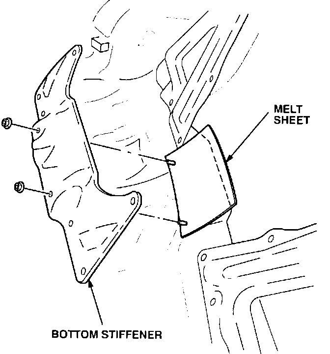

Rear Seat: Squeaks At the Rear Seat Back
REAR SEATSqueaks at the Rear Seat Back
Symptom:
Creak from behind the rear seat back.
Probable Cause:
Interference between the rear bulkhead and the rear floor area.
Corrective Action:
Apply melt sheet between the bottom stiffener and the floor.

1. Remove the rear seat back and cushion.
2. Remove the stiffener panel on each side.

3. Remove the bottom stiffener, and apply a 90 X 200 mm piece of melt sheet between the bottom stiffener and the floor.
4. Reinstall all parts.
WARRANTY CLAIM INFORMATION
Operation number:
853040
Flat rate time:
0.4 hour
Failed P/N:
65521-SL5-A00ZZ
Defect code:
042
Contention code:
B07